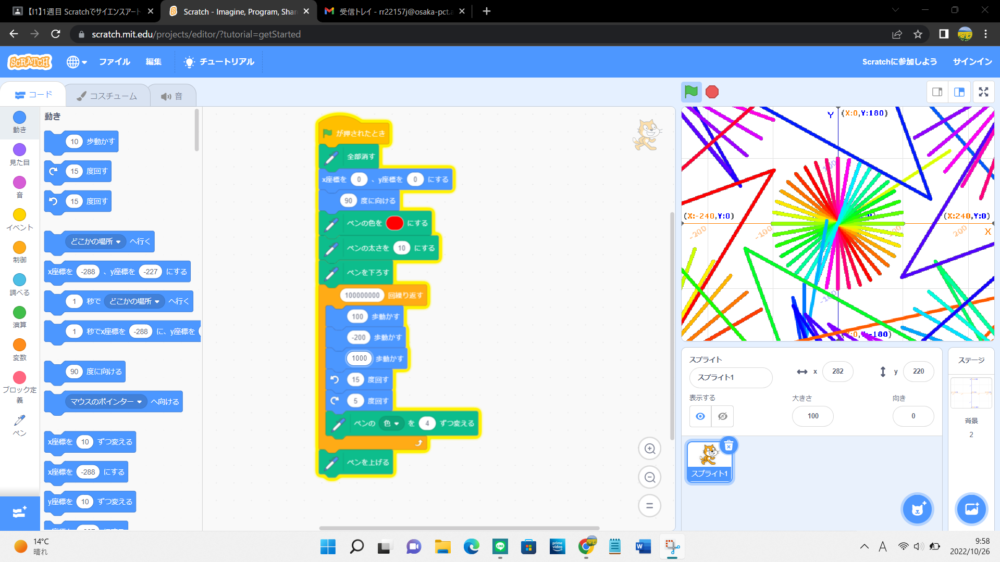
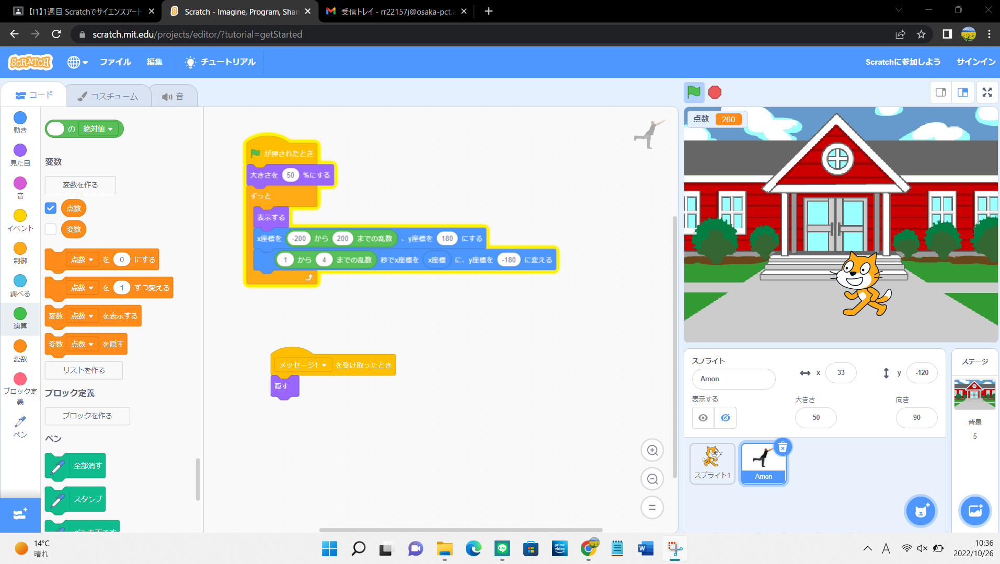

1週目のレポート ： 公大高専１年実習I-1
3B班38番 とし
第1週目
1-1 サイエンスアート

1.内容
スクラッチを使って絵を描くプログラムを作成した。中央にある虹色の円だけでは面白くないと思い、
画面のふちを線がぎざぎざに走るように工夫した。
2.感想
正直あまり出来のいい絵ではないと思っている。本来は二重螺旋のような絵をかきたっかたが技術不足だった。
もっと工夫すれば自分の理想の絵に近づけると思う。
1-2 ゲーム

1.内容
スクラッチを使って猫が落ちてくるリンゴをひろうゲームを作成した。このゲームを作るにあたって、
猫とりんごの二つのオブジェクトを別々にプログラムした。
2.感想
アイデア次第で様々なゲームを作れることが分かった。はじめは難しそうだと思っていたが
部分部分にわかるとゲームは簡単なプログラムの集合なのだと分かった。
1-3 ホームページ作成
私のホームページ
1.内容
githubというサービスを用いて自分のホームページを作成した。
また今までインターネットで閲覧してきたホームページが作られる過程を知ることができた。
2.感想
今まではホームページを閲覧する側で作る側の視点なんて考えたこともなかったが、
この実習を通してそれを体験することができた。この機能を使いこなせるように頑張ろうと思う。